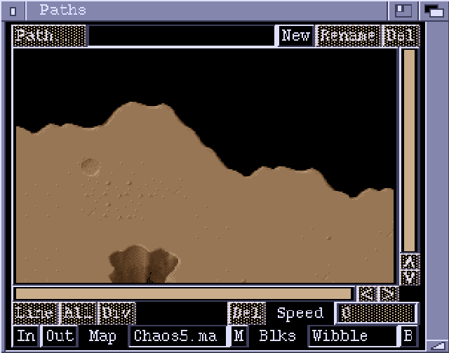

Paths Window

Path
This button brings up a requester to let you select a path to edit.
New
Creates a new path.
Rename
Renames the current path.
Del
Delete the current path.
The middle area of the window displays the path currently being edited. The path consists of points connected by line segments. Points are represented by small squares. The start point of the path is marked by an X. Points can be dragged around using the mouse. A line segment can be selected by clicking on it. Holding down the SHIFT key lets you select multiple line segments. Selected line segments appear in a different colour to unselected ones. Each line segment has an associated speed value. This is the speed, in pixels per frame, at which an object will travel along the segment.
Line
Adds a line segment to the path. The length and speed of the new segment will
be copied from the previous segment.
All
Selects all the line segments in the path.
Div
Subdivides the selected line segments. Each line segment is split in half,
with a new point being placed at the midpoint.
Del
Deletes the selected line segments.
Speed
This number gadget displays the speed value of the most recently selected
line segment. Entering a new value sets the speed of all the currently
selected segments.
In
Zoom in.
Out
Zoom out.
Map
Picks a Map (from a loaded chunk) to use as a background for the path.
This lets you position paths at a specific position on the map, and align
with features on the map.
Blks
Picks a blockset to use with the background Map.